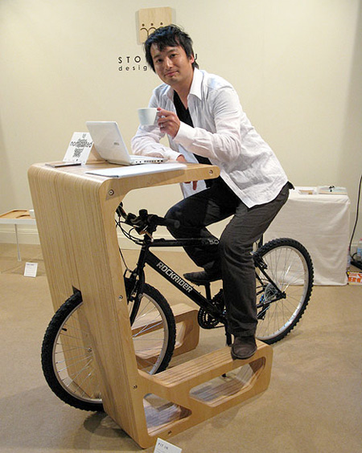
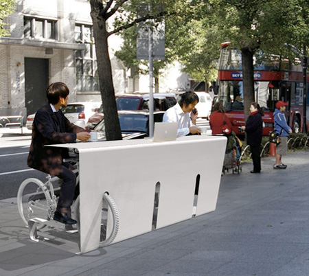

Необычный держатель для велосипеда создан японской студией дизайна MUU. Выполненный из клеенного массива дерева держатель может использоваться еще и в качестве стола.

Видимо понимая, что вряд ли кто-то будет весь день работать сидя на велосипеде в студии уже подготовили концепт многовелосипедного уличного держателя.
Уличный вариант будет выполняться уже из металла, и на мой взгляд нашел бы своих пользователей, к примеру, около того же «Подорожника»

Пока кемеровский общепит не освоил разработки, а снег еще не растаял любой обладатель заднего колеса от велосипеда может сделать циклотроп.
Прикрепленные к колесу изображения и всякие штуки сыграют с вашим зрением добрую шутку. Вы сможете посмотреть мультфильм без использования расширителей сознания.